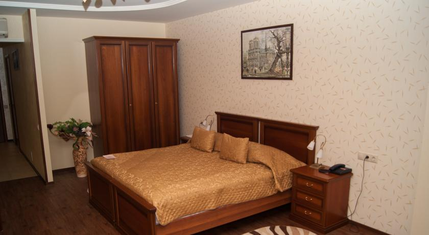
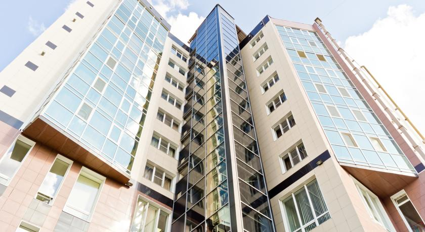
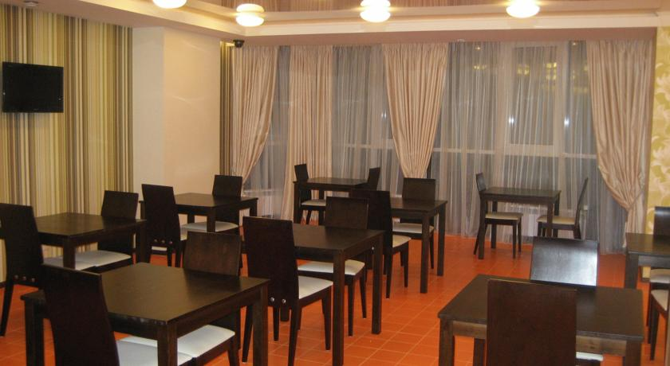
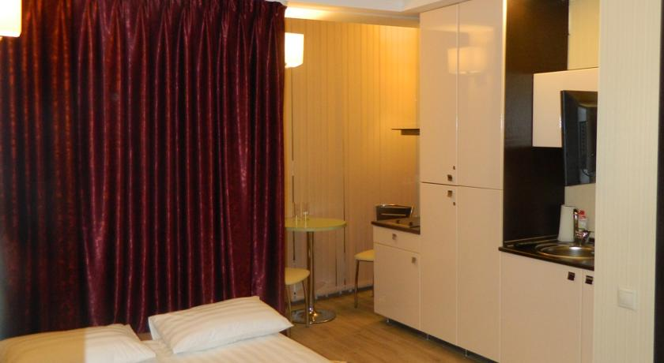
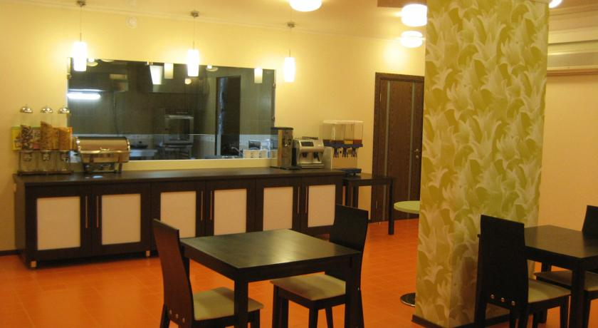

Отель Пионер Люкс






Этот отель класса люкс находится в центре Саратова. К услугам гостей номера с бесплатным Wi-Fi, бесплатным мини-баром и видом на проспект Кирова со множеством магазинов. Это первый отель Саратова, оснащенный лифтом с панорамным видом.
Отель "Пионер Люкс" расположен в многоэтажном здании со стеклянным фасадом. Каждое утро гостям подают завтрак "шведский стол". Вкусные блюда русской кухни сервируют в традиционном винном салоне, отделанном деревом, или в современном ресторане с телевизором с плоским экраном.
В индивидуально меблированных номерах отеля "Пионер Люкс" есть рабочий стол, мини-бар и телевизор с плоским экраном и DVD-плеером. В бесплатном мини-баре для гостей приготовлены алкогольные и безалкогольные напитки, а также закуски.
В баре представлен широкий выбор вин и других напитков на розлив. На круглосуточной стойке регистрации отеля "Пионер" есть сейф для хранения ценных вещей.
Отель "Пионер Люкс Саратов" имеет удобное месторасположение, ведь на проспекте Кирова к услугам гостей магазины, кинотеатры, рестораны и кафе. Саратовский центральный аэропорт также находится неподалеку.
Это любимая часть города Саратов среди наших гостей согласно независимым отзывам.
Мы говорим на вашем языке!
Отель Пионер Люкс — принимает гостей с 7 апр. 2011
Номеров в отеле: 30